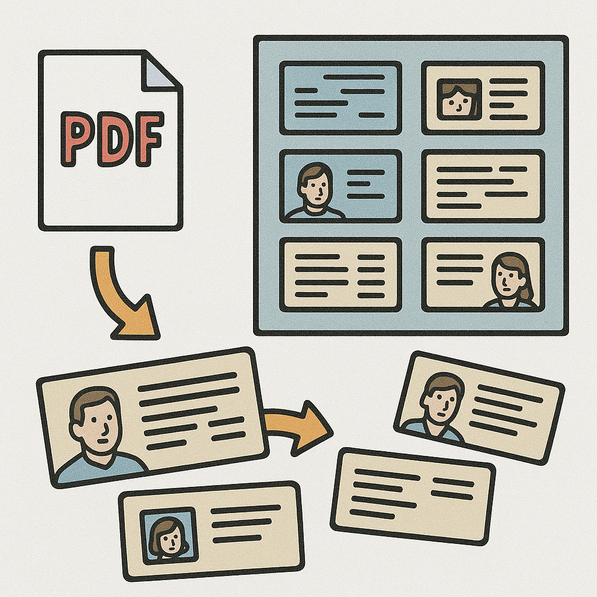

Home > BusinessCardScanner
Business Card Scanner

Script: scan_cards.py
Description
This script splits scans of business cards into individual images per card. It supports both PDF files (multi-page scans) and single image files. The output consists of cropped images for each card, named according to their page and grid position.
Usage
python scan_cards.py INPUT_FILE --nrows N --ncols M
-
INPUT_FILE: Path to the input PDF or image file. -
--nrows N: Number of rows in the grid (N). -
--ncols M: Number of columns in the grid (M).
Example
python scan_cards.py cards.pdf --nrows 2 --ncols 3
This will split each page of cards.pdf into a 2x3 grid, saving each card as a separate PNG file.
Method of Operation
- Input Handling: Accepts a PDF or image file. If PDF, each page is converted to an image.
- Thresholding: Converts each image to grayscale and sets all pixels below a brightness of 20 to black.
- Grid Splitting: Each image is divided into an NxM grid, cropping out each cell.
-
Saving Output: Each cell is saved as
INPUT_pPAGENUM_imIMNUM.png.
Future Work
- Fine-tuning cell boundaries: Improve cropping to better fit card edges, possibly using edge detection or contour finding.
- Automatic grid detection: Detect grid layout automatically from the scan.
- Card content extraction: Integrate OCR or other methods to extract information from each card image.
- Batch processing: Support for processing multiple files or directories at once.
See requirements.txt for dependencies.